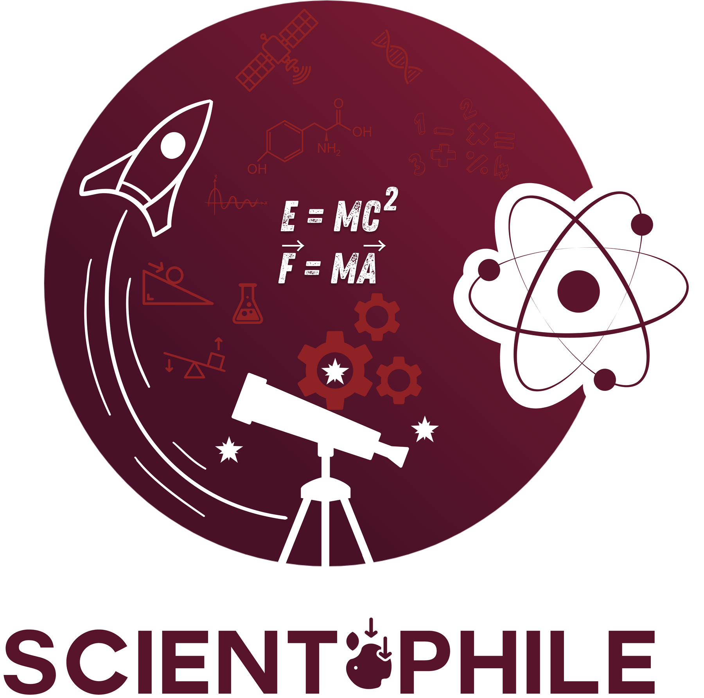

পৃথিবীর বাইরের গল্প
নক্ষত্র, গ্রহ আর মহাকাশের বিস্ময় নিয়ে প্রশ্ন করো—উত্তরের পথটা শুরু হোক আকাশের দিকে তাকিয়ে।
বিজ্ঞান শুধু বইয়ের পাতায় নয়—চারপাশের পৃথিবীকে নতুন করে দেখার এক দারুণ উপায়। কৌতূহলী মনদের জন্য Scientophile সেই জানার যাত্রার সঙ্গী।

একটি ভালো প্রশ্ন নতুন অনেক দরজা খুলে দেয়। যে বিষয়ই তোমাকে ভাবায়, সেখান থেকেই শুরু হোক খোঁজার আনন্দ।
নক্ষত্র, গ্রহ আর মহাকাশের বিস্ময় নিয়ে প্রশ্ন করো—উত্তরের পথটা শুরু হোক আকাশের দিকে তাকিয়ে।
প্রকৃতি, শরীর আর অণুজগতের যোগসূত্র খুঁজে দেখো—চেনা পৃথিবীও তখন হয়ে উঠবে নতুন।
প্রযুক্তি ও যুক্তির হাত ধরে অসম্ভব মনে হওয়া ধারণাগুলো কীভাবে বাস্তবে রূপ নেয়, তা জানো।
Scientophile-এর Facebook ভিডিও ও পোস্ট দেখুন। ভিডিও চালাতে পোস্টের ভেতরে প্লে করুন।
বিজ্ঞানের প্রতি আগ্রহ, নতুন ভাবনা, কিংবা জানার মতো কোনো প্রশ্ন—এখান থেকেই আমাদের সঙ্গে সেই যাত্রা শুরু করো।